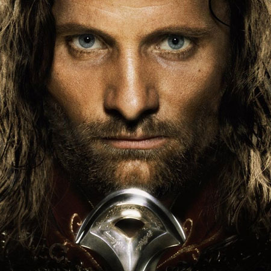
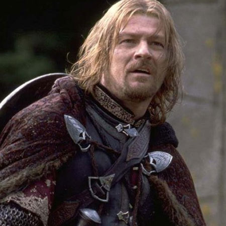
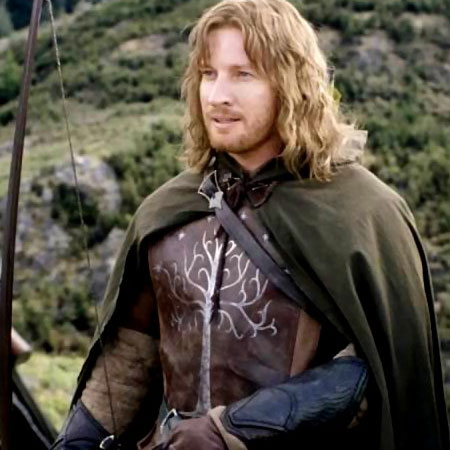
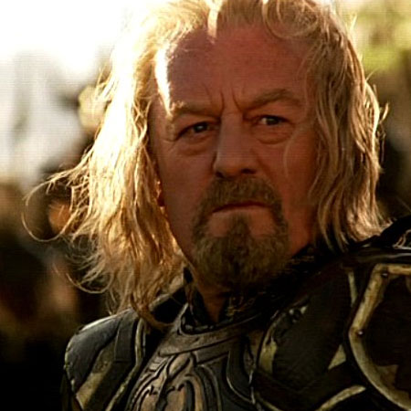
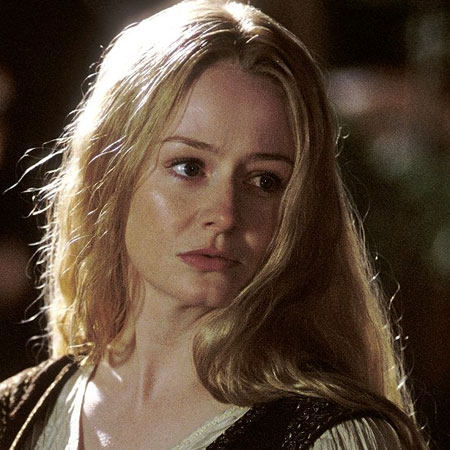
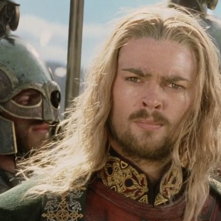
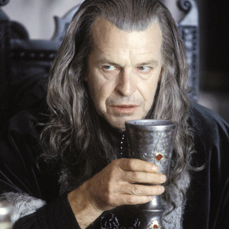
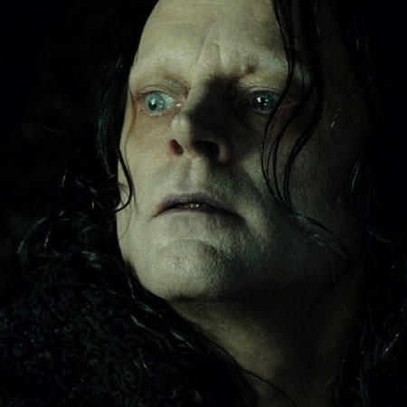

Aragorn
|  | Aragorn, son of Arathorn, is the legal heir to the throne of Gondor and descendant of Isildur. He is one of the Dunedains, blessed with long life and is almost 90 years old. First going by the nickname of Strider, he will rescue the Hobbits at the Inn of the Prancing Pony. After the passing of Gandalf in the Mines of Moria, he will lead the Fellowship and fight all the wars until the end of the War of the Ring. He will reclaim his throne and marry Arwen, daughter of Elrond of Rivendell. He is played by Viggo Mortensen in the movie trilogy. |
Boromir
|  | Boromir is the son of Denethor and brother of Faramir. He wa sent to Rivendell by his father to try to convince the council to let him, and Gondor use the Ring to protect the Kingdom. When that failed, he enrolled in the fellowship. But he was seduced by the power of the Ring and tried to take him away from Frodo, which will lead him to his death. He is played by the english actor Sean Bean. |
Faramir
|  | Faramir is Boromir's brother and son of Denethor, steward of Gondor. We first see him appear in the Two Towers when he makes Frodo, Sam and Gollum prisoners. Even though he faces the evil of the Ring and is almost corrupted by it, he manages to defeat it, letting Frodo and Sam go. His gesture probably saved Middle-Earth from Sauron's evil. Unloved by his father, he will be sent to his death to Osgilliath but survived it. In the movies, he is played by David Wenham. |
Theoden
|  | Theoden is introduced in the second volume of the trilogy. He is the king of the Kingdom of Rohan. Poisonned by Sarumane, he will be freed by Gandalf and will then lead his men and all the men he can find to march against the army of Mordor. He will die during this battle, killed by the Witch King of Angmar despite and attempt of his niece to save him. Bernard Hill played his character. |
Eowyn
|  | Eowyn is played by Miranda Otto. She is the niece of Theoden and becomes the heir to the throne of Rohan after her cousin Theodred passes away. She is very courageous and willing to fight the evil spreading through Middle Earth even though she is not supposed to. During the battle for Minas Tirith, she will defeat the Witch King of Angmar. |
Eomer
|  | Eomer is one of the Rohirrim, nephew of Theoden King. He was banned from Rohan by Grima when his uncle was controlled by Sarumane. He will return and fight for his uncle during the battle of Helm's Deep. He is played by Karl Uban. |
Denethor
|  | Denethor is the steward of Gondor, ruling the kingdom of Gondor while no one claims the throne. During the Return of The King, his madness will almost make Minas Tirith fall. He will burn himself alive and die. He is played by John Noble. |
Grima
|  | Grima Wormtongue is part of the people of Rohan . He will be corrupted by Sarumane and rule Rohan through Theoden while he was poisonned. His treason will make him reveal the weakness of Helm's Deep to Sarumane which will almost make Rohan lose the battle. But he will redeem himself and end Sarumane's life. He is played by Brad Dourif. |